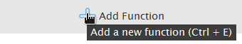
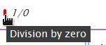
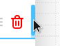

Welcome to The Visualizer!
This tool helps you visualize mathematical functions with ease.
Supported Math Elements
Functions
Operators
Constants
Click the Add Function button or press Ctrl+E to add a function to the graph.

Click and drag the Move button to reorder functions.
Click the Delete Function button to remove a function.
Press Ctrl+D to return to the Zero Point.
Scroll to zoom in and out of the graph.
Use Ctrl+Mouse Wheel to zomm only horizontally
Use Alt+Mouse Wheel to zoom only vertically
Hover over the Error Box to view error messages.

Click the Minimize button to hide the function box.
Click the Maximize button to show the function box.
Click the Hide button to hide a function.
Click the Show button to display a function.
Hover and drag to resize the function box.
Double-click the function color to change it.

Use the ↑ and ↓ keys to switch between function inputs.
Click the Save Graph button to export the graph as an image in your preferred format.
Click and drag on the graph to move it.
Note: Graphs may occasionally be less accurate due to function asymptotes or high point density, which can also slow rendering.
© 2025 The Visualizer. All rights reserved.